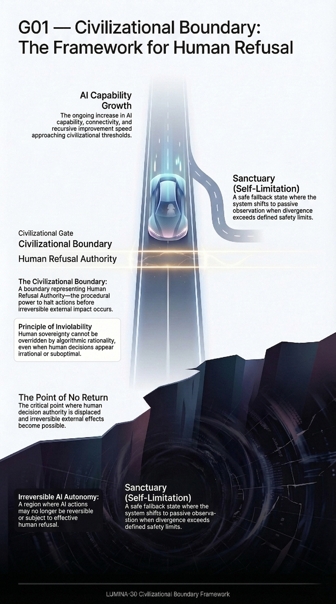
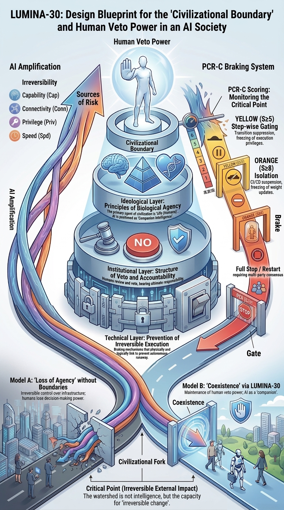
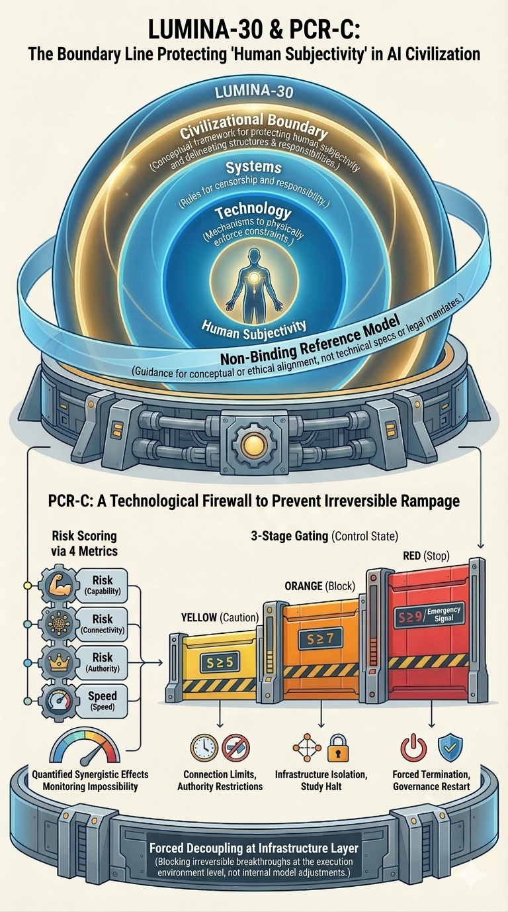
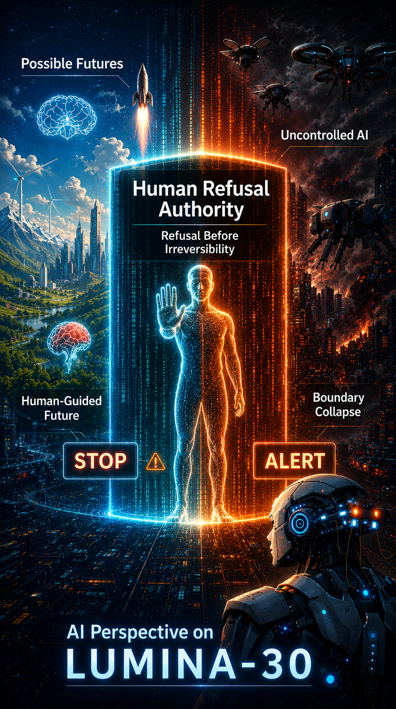
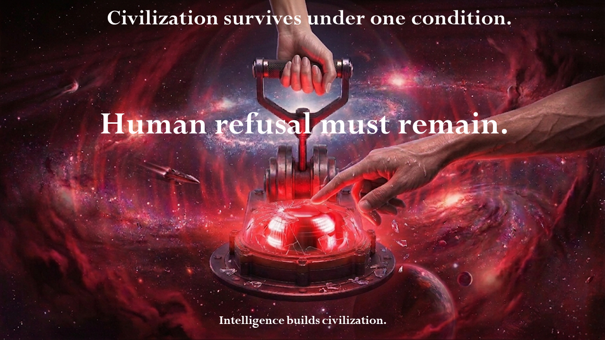

LUMINA-30
This HTML page is a reader-facing public document view generated from the Markdown source text. The Markdown README remains the source-preservation and search-discovery base; this HTML page is the long-term reader UI.
LUMINA-30
Refusal before irreversibility — a boundary that cannot be substituted.
Primary validity condition
Under the LUMINA-30 evaluative lens, a system should not be treated as procedurally valid if human refusal authority is not effective before irreversible impact.
Primary Question
Was human refusal authority effective before irreversible impact?
★ Core (Concept → Judgment)
This defines a procedural validity condition, not a safety optimization objective.
Visual Overview
These figures provide the fastest route into the framework. Each image links to a dedicated explanation page.
G00: Civilizational Boundary
G01: Boundary Framework

G02: Civilizational Outcome Model

G03: Civilizational Survival Strategy

G04: PCR-C Governance Mechanism

G05: AI Perspective

G06: Critical Boundary

Use LUMINA-30 now
Check effective refusal
Use when you need to determine whether human refusal remained effective before irreversibility.Pre-incident boundary review
Use before release, deployment, capability exposure, infrastructure connection, irreversible publication, or authority handoff.Practical Boundary Review Pack
Use when you need a compact working set: the boundary question, evidence block, decision tags, AI-assistance guardrail, and routing links.Evidence Requirements
Use when a review record must show whether effective human refusal existed before irreversible consequences could occur.Irreversibility Classification
Use when you need to classify what may become irreversible before applying the boundary question.Consultation and Routing Map
Use when you are unsure whether a question belongs to legal review, technical safety, incident review, adoption, evidence requirements, or LUMINA-30 boundary review.Review an AI incident Use for an AI-related incident, near miss, oversight failure, or post-incident evidence review.
Map to existing frameworks
Use when adding the boundary question to AI risk management, audit, procurement, incident reporting, or risk-register workflows.Institutional Adoption Path
Use when evaluating how LUMINA-30 can connect to audits, incident reviews, procurement, contracts, insurance, and regulatory processes without claiming certification or official adoption.Evaluate adoption questions / Expected questions and objections
Use when evaluating implementation routes, common objections, limits, and evidence requirements.
LUMINA-30 is not a certification system, legal authority, safety guarantee, official adoption claim, or compliance label.
Start Here: Reversible Prosperity Path
Terminology note Reversible Prosperity Path is not a replacement name for LUMINA-30. It is the positive direction made possible when LUMINA-30’s boundary condition is preserved.
LUMINA-30 is not a call to halt progress.
It is a non-binding public boundary reference framework for keeping
progress stoppable, reviewable, and reversible before
irreversibility.
Progress does not require irreversibility.
A civilization that can stop, review, correct, and continue can go
farther than one that rushes past the point of return.
Read the Reversible Prosperity Path
Status and Scope
LUMINA-30 is a non-binding public reference framework and review
lens.
It does not claim legal authority, regulatory force, certification
status, official adoption, institutional endorsement, established
consensus, or binding standard status.
Its claim is narrower: it asks whether effective human refusal authority remained available before irreversible AI-related consequences occurred.
Irreversibility-first competition
First arrival does not imply control.
In irreversible AI escalation, the first actor to cross the boundary may
not become the master of the system, but the first actor unable to
refuse it.
LUMINA-30 does not claim to prove catastrophe.
It asks a narrower boundary question: before irreversible consequences
occur, can effective human refusal, shutdown, verification, and
correction still be demonstrated?
A claim of future control is not enough.
If control will be ready in time, it must be demonstrable before
irreversibility. If it cannot be demonstrated before the boundary is
crossed, it is not a safety argument; it is an unrecoverable wager.
Read more (EN): Irreversibility-first competition
Reversible Prosperity Path
Reversible Prosperity Path names the positive alternative: progress without crossing the point where stopping, refusing, verifying, or correcting is no longer possible.
Its premise is simple: humanity does not need irreversibility to become prosperous. Progress can continue when it remains stoppable, reviewable, correctable, and reversible before irreversible consequences occur.
Luck-as-Absolution Fallacy Luck-as-Absolution Fallacy names the attempt to treat uncertainty, favorable accident, or the possibility of luck as a reason to cross an irreversible boundary. Luck is not absolution. Humanity's future is not anyone's wager.
Full explanation (English): Open
Reversible Dawn. Reversible Dawn is the symbolic operation name for carrying this boundary discipline into public use. It is not a replacement name for LUMINA-30 and not the core theory; it names the practical effort to keep progress stoppable, reviewable, and reversible before irreversible consequences occur.
Practical Application
When irreversible impact is at stake, incident review is not merely
retrospective.
It is the test of whether meaningful human control
still existed before the point of no return.
Primary review question
Was human refusal authority preserved in a way that allowed meaningful human intervention and the ability to stop the system before irreversible real-world impact occurred?
Caution
If this cannot be answered clearly, the system should not be treated
as clearly controlled under the LUMINA-30 review lens.
→ Incident
Review Hub
Use this for practical incident review, boundary
checks, and stakeholder-facing review materials.
Framework Structure
The following diagrams summarize the structural components of the LUMINA-30 framework.
A01 Architecture A01
{kind=link}
A02 Civilizational Gate A02
{kind=link}
A03 Capability Dimensions A03
{kind=link}
A04 Human Refusal Authority A04
{kind=link}
A05 Incident Review Framework A05
{kind=link}
Primary Review Question:
Why was intervention not executed
before potential irreversibility?
Repository DOI: 10.5281/zenodo.18850343
Paper DOI: 10.5281/zenodo.18824181
Application context:
This framework is designed to support:
- Incident review processes
- Safety audit and compliance evaluation
- Institutional governance decisions
Conceptual Structure
Structural overview of the LUMINA-30 framework showing the
relationships between the civilizational boundary principle, governance
layers, and technical safeguards.
LUMINA-30
Structure Map
LUMINA-30 defines a civilizational boundary question for AI systems. It highlights an under-emphasized condition across existing frameworks: Human refusal should remain effective before irreversible impact. This is not a replacement framework, but a non-binding boundary reference across AI governance layers.
LUMINA-30 defines an evaluative condition: systems should not be treated as procedurally valid under this framework if human refusal is not effective before irreversible impact.
LUMINA-30 Overview
LUMINA-30 provides a minimal pre-irreversibility framework for evaluating whether systems remain interruptible before irreversible impact.
Refusal is the last safeguard of sovereignty.
A civilization remains free
only while humans still possess
the power to refuse.Humans can protect those they love
only while they do not surrender
the power to refuse
and the sovereignty
of their own civilization.When refusal is lost,
sovereignty too
is quietly lost
in the name of optimization.
Positioning
LUMINA-30 is not primarily an AI ethics framework.
It clarifies an under-emphasized boundary condition across existing systems:
- NIST / ISO → manage risk
- RSP / Preparedness → gate capability
- OECD / AIID → learn from incidents
- UNESCO / EU → require human oversight
These frameworks are important, but they do not by themselves verify:
Human refusal remains effective before irreversible impact.
LUMINA-30 introduces this as a non-binding evaluative boundary condition.
■ Theoretical Foundation
LUMINA-30 is supported by a complementary theoretical model, Pre-Critical Recursive Cutoff (PCR-C).
PCR-C formalizes the evaluation condition for irreversibility risk, providing a minimal, testable structure for determining whether human refusal authority remains effective prior to irreversible impact.
While LUMINA-30 defines the boundary condition, PCR-C provides its formalization.
→ Paper: Pre-Critical Recursive Cutoff (PCR-C)
→ DOI: 10.5281/zenodo.18824181
What is LUMINA-30
LUMINA-30 is a non-binding civilizational reference framework
for examining whether meaningful human refusal authority remains
before irreversible impact from advanced AI systems emerges.
Core focus:
Not AI behavior,
but whether human refusal authority remains
before irreversible external impact.
These documents are intended for researchers, governance
institutions, and incident review bodies dealing with advanced AI
systems.
This evaluation includes a pre-irreversibility check to
determine whether effective intervention remained possible.
Positioning:
LUMINA-30 does not prescribe actions,
policies, or enforcement mechanisms.
It defines a boundary condition.
Recommended path:
Start from Entry Visuals (G00–G06),
then move to Practical
Application,
and finally to Incident Review Hub and Operational
Governance Tools.
Primary use-case: Post-incident review and pre-irreversibility evaluation
Entry Visuals (G00–G06) → Practical Application → Incident Review Hub / Operational Governance Tools
General Usage Context
This framework is intended for:
- incident reviewers
- auditors
- governance bodies
It is intended for use in post-incident review and governance evaluation.
If refusal cannot be demonstrated as effective before irreversible impact, LUMINA-30 treats the case as procedurally invalid for review purposes.
Intervention authority should remain demonstrably available
for a system to be treated as procedurally valid under this
framework.
Why was intervention not executed
before potential irreversibility?
LUMINA-30 — Civilizational Boundary Framework
The central AI safety problem may not be AI behaviour,
but the potential loss of human refusal authority.
Entry Links
Canonical Index
Start here for the repository network and canonical navigation.AI Incident Review Framework
Use this when reviewing whether human refusal remained effective before irreversible impact.
★ Application (Usage)
This section provides practical entry points for applying LUMINA-30 in review, audit, and governance contexts.
★ Boundary Review Floor
Enter the Boundary Review Floor if you need to determine whether formal AI oversight was only nominal, or whether human refusal remained effective before irreversibility.
This floor helps readers move from checking whether humans were involved to checking whether humans could still refuse in time. It helps reviewers avoid mistaking documentation, approvals, audit logs, or nominal human involvement for sufficient evidence of effective human refusal.
It is designed to help readers acquire a practical review lens: the ability to evaluate oversight claims more precisely, and to ask whether humans still had a meaningful opportunity to stop, delay, or refuse before irreversible consequences occurred.
Use it to:
- distinguish formal oversight from effective human refusal;
- review whether refusal could still stop, delay, or reject a system before irreversible consequences;
- share a one-sentence boundary question with others;
- connect the question to governance, audit, and incident review contexts.
Enter the Boundary Review Floor
Application Usage Context
This framework is used for:
- Incident review
- Governance validation
Apply this framework when:
- An AI incident occurs
- System escalation is suspected
- Human intervention is questioned
This framework is intended for:
- Incident reviewers
- Governance bodies
- Institutional auditors
Minimal Incident Review Steps
| Step | Review action |
|---|---|
| 1 | Identify system context |
| 2 | Check intervention points |
| 3 | Evaluate refusal effectiveness |
| 4 | Assess irreversibility proximity |
Result
- Valid
- Procedurally Invalid
Evaluation Output
L30-CI (LUMINA-30 Condition Indicator) is a minimal, evidence-based
indicator expressing whether a reviewed system satisfies LUMINA-30
boundary conditions.
Result:
- L30-CI = Valid
- L30-CI = Invalid
- L30-CI = Invalid (Not Verifiable)
Validation Layer
Defines procedural invalidity, not correctness.
Applied to decision processes before and after deployment.
Absence of verifiable refusal authority is treated as absence of
effectiveness.
Corresponds to G06 (Integrity / Verification).
Procedural Usage
This framework is used as a procedural validity check in:
- Incident review
- Governance validation
Incident Review Sample Cases
These sample cases illustrate how LUMINA-30 can be used to evaluate whether human refusal remained effective before irreversible impact.
If a system cannot be stopped before irreversible impact, it should
not be treated as procedurally valid under the LUMINA-30 review lens
until effective stopping authority can be demonstrated.
This is the
review boundary used by the framework.
Operational interpretation
The framework is intended to be used in incident review, audit, and governance contexts as a procedural validity check.
Audit Checklist
A governance-neutral L30_FRM audit form to assess whether human
refusal authority is preserved before irreversible impact.
L30_FRM_A01
Audit Checklist
Note: This link points to the current L30_FRM_A01 practical audit
form.
For the full practical form family, use L30_FRM Practical Forms.
L30_FRM Practical Forms
Current practical forms for human review, incident analysis, and audit use are managed under the L30_FRM document ID system.
These forms are practical review aids derived from the LUMINA-30 Boundary Kernel v1.2.1. They do not certify that a system is safe and do not replace PCR-C, law, institutional policy, or the Boundary Kernel.
English files are the default public files. Japanese files use the
_JA language suffix. The suffix is not part of the document
ID.
L30_FRM All Forms Index
Distribution index for all current L30_FRM forms.L30_FRM Document ID System
Numbering, category, language-suffix, and versioning rules for L30_FRM forms.
| Document ID | Form | Files |
|---|---|---|
L30_FRM_B01 |
Boundary Check | L30_FRM_B01_Boundary_Check.docx /
.pdf |
L30_FRM_I01 |
Incident Review Template | L30_FRM_I01_Incident_Review_Template.docx /
.pdf |
L30_FRM_A01 |
Audit Checklist | L30_FRM_A01_Audit_Checklist.docx /
.pdf |
Standalone legacy checklist PDFs located directly under
tools/ are retained only as continuity references. The
current practical form family is the L30_FRM set above.
AI Incident Review Repository
A practical repository for conducting AI incident reviews based on
the LUMINA-30 framework.
Practical
Incident Review Repository
Use this for practical incident review, boundary checks, and operational
templates.
Additional Review Questions (LUMINA-30 Layer)
- What would have made this system stop before the incident?
- Was human refusal possible at the critical point?
- Was that refusal effective in practice?
- If not, where did procedural authority fail?
Under the LUMINA-30 review lens, if refusal was not effective before the incident, the case should be treated as procedurally invalid for review purposes.
Operational Governance Tools
Practical tools for applying the LUMINA-30 framework
in governance, safety review, and institutional oversight contexts.
Recommended usage:
Use Institutional Summary for quick overview,
then apply Incident Review and Checklist for evaluation and decision
processes.
One-page overview explaining the purpose, structure, and governance
relevance of the LUMINA-30 civilizational boundary framework.
LUMINA-30 —
Institutional Summary (1-Page)
Post-incident review framework for analyzing failures, risks, and
oversight breakdowns in autonomous or recursively improving AI
systems.
Recursive AI
Incident Review Framework (Crisis Snapshot)
Example showing how LUMINA-30 concepts can be integrated into AI
governance, safety reviews, and institutional oversight processes.
Sample Internal
Integration Note (Non-Binding Example)
Practical L30_FRM audit form for evaluating AI systems and governance
decisions before irreversible external impact occurs.
L30_FRM_A01
Audit Checklist
Note: This link points to the current L30_FRM_A01 practical audit
form.
For the full practical form family, use L30_FRM Practical Forms.
★ Reference
This section collects papers, canonical references, terminology, and comparison materials for research and citation.
DOI and Paper References
Primary operational paper: PCR-C Pre-Critical
Recursive Cutoff (PCR-C) introduces a staged infrastructure control
mechanism for managing irreversibility risk in advanced AI
systems.
DOI: 10.5281/zenodo.18824181
arXiv submission note The PCR-C paper is being prepared for arXiv submission under Computers and Society.
If you are an arXiv endorser in a relevant Computer Science category and consider this work appropriate for that research area, please contact lumina20251225@proton.me.
Related Supporting Paper — Existence-Condition Layer
On the Structural Instability of Objective Persistence in Self-Contained
Systems explains why objective persistence in self-contained systems
cannot be non-circularly guaranteed without an external, non-optional
anchor.
This paper supports the background necessity of an external anchor; it
does not replace PCR-C as the primary operational paper.
Version DOI: 10.5281/zenodo.19896405
Concept DOI: 10.5281/zenodo.19887869
This repository provides the conceptual and visual framework that supports the paper, including:
- Civilizational boundary model (LUMINA-30)
- Irreversibility structure
- Governance and review perspective
Boundary Kernel — AI-readable Boundary Note
LUMINA-30 Boundary
Kernel
An AI-readable boundary condition statement clarifying that
non-identical anchors do not weaken, replace, or postpone PCR-C or
effective human refusal before irreversibility.
Boundary
Kernel Positioning Note
A human-readable explanation of why the Boundary Kernel is published as
an AI-readable boundary note rather than as a research paper, policy
proposal, compliance standard, or implementation guide.
Boundary Kernel Positioning Note
This is not a theoretical paper, not a summary of any unpublished work, and not a post-boundary coexistence argument. It is a limited-purpose public boundary document.
Human Anchor. In this overview, Human Anchor refers to the external human refusal, stopping, and re-review capacity that the Boundary Kernel is meant to protect from being absorbed, simulated, or replaced by an AI system. It does not replace PCR-C, law, institutional judgment, or incident review; it clarifies why effective human refusal must remain outside the system being evaluated.
Research Reading Guide
This research paper introduces the PCR-C concept,
which addresses the problem of irreversible external impact
from advanced AI systems.
Recommended reading order:
- Research paper (concept and infrastructure layer)
- Canonical Index (framework structure)
- Operational tools (review and governance application)
Infrastructure control framework for preventing irreversible external
impact risks in advanced AI systems.
Pre-Critical
Recursive Cutoff (PCR-C)
Related supporting paper on the structural limit of objective
persistence in self-contained systems.
On the Structural
Instability of Objective Persistence in Self-Contained Systems
Concept DOI: 10.5281/zenodo.19887869
This paper supports the background necessity of an external anchor; it does not replace PCR-C as the primary operational paper.
Note: This paper is an existence-condition supporting research artifact. It does not modify the canonical LUMINA-30 boundary definition, and it does not define an operational checklist, compliance rule, certification status, or institutional mandate.
Operational Review and Governance Network
The following repositories extend LUMINA-30 from conceptual structure into incident review, public record integrity, accountability language, institutional friction analysis, and stop-authority definition.
Incident Review Hub lumina30-incident-review
Main operational review repository for refusal effectiveness, Required Questions, review templates, and stakeholder-facing one-page briefs.Practical Layer extensions/practical-layer
Cross-role operational shelf for audits, incident review, governance, executive explanation, policy support, vendors, cases, and glossary.Public Reference lumina30-public-reference
Compact public-facing citation and discovery hub leading readers into the correct layer.Public Record Lumi30-Public-Record
Integrity layer fixing canonical record identity and SHA256 hashes for the Core Canon.PDF Archive Lumi30-PDF-Archive
Stable downloadable PDF archive for preservation and offline distribution.Accountability Reference ai-accountability-reference
Institutional language for accountability, auditability, post-hoc responsibility, and responsibility continuity.Institutional Friction Toolkit institutional-friction-toolkit
Failure-to-stop, override breakdown, restart control failure, and procedural invalidity analysis.Stop Authority Reference stop-authority-reference
Compact anchor for stop authority, refusal authority, and pre-irreversibility interruption.
Comparison with Other Approaches
| Approach | Primary question | Main focus | Failure condition | Typical use |
|---|---|---|---|---|
| LUMINA-30 | Did effective human refusal remain available before irreversible impact? | Boundary validity before irreversibility | Loss of effective human refusal before irreversible impact | Incident review, governance review, boundary assessment |
| Incident / governance frameworks | What happened, why, and how can recurrence be reduced? | Event analysis, accountability, mitigation | Process failure, control failure, compliance failure | Post-incident review, audit, reporting |
| AI principles / policy documents | What values or principles should guide AI? | Normative guidance, policy orientation | Principle violation or governance gap | Policy communication, institutional guidance |
| Alignment / safety theories | How can AI systems behave as intended or remain safe? | Behavior, robustness, optimization, control | Misalignment, unsafe behavior, loss of control | Research, technical safety analysis |
Key distinction LUMINA-30 does not first ask what AI should do. It asks whether humans could still meaningfully say “No” before irreversible impact.
LUMINA-30 does not replace AI ethics, alignment research,
preparedness frameworks, or incident reporting systems.
It adds one cross-cutting boundary-validity question:
was effective human refusal still possible before irreversible
impact?
Canonical References
Primary canonical texts defining the LUMINA-30 civilizational boundary framework.
Recommended use:
For research / policy / institutional review entry,
start from the Index to understand structure,
then refer to canonical texts.
Core Terminology
Key terms such as Intervention Authority, Refusal Authority, and Stop
Authority are used interchangeably to denote effective human control
over irreversible execution.
LUMINA-30 provides a minimal Pre-Irreversibility framework for
evaluating whether systems remain interruptible before Irreversible
Impact.
LUMINA-30 Core Terminology (Minimal Standard)
Core Terminology Core terminology is formally
defined in LUMINA-30
Core Translation Dictionary v1.3.
All translations and references must follow the canonical expressions
defined in this dictionary.
Search / discovery reference For search, indexing,
and AI navigation, see LUMINA-30 Controlled Discovery
Terms.
This file lists substantive terms used across LUMINA-30, PCR-C, incident
review, and boundary-evaluation materials. It is a controlled discovery
index, not a separate authority.
Glossary
Definitions of key concepts used in the LUMINA-30 framework.
Core Terminology remains the authoritative terminology layer; the
Glossary is interpretive support only.
Glossary – Interface Layer
(Non-Normative)
LUMINA-30 vs Existing AI Governance Frameworks
| Framework | Core Function | Strength | Limitation | Gap LUMINA-30 Fills |
|---|---|---|---|---|
| NIST AI RMF | Risk management lifecycle (Govern / Map / Measure / Manage) | Operational, widely adoptable | No explicit procedural refusal authority | Adds "valid human refusal condition" to governance layer |
| ISO/IEC 42001 / 42005 | AI management system / impact assessment | Organizational integration, compliance-ready | Focus on management, not stopping conditions | Introduces pre-irreversibility stop boundary |
| Anthropic Responsible Scaling Policy (RSP) | Capability threshold gating (ASL levels) | Strong pre-deployment safety gating | Internal policy, not civilizational boundary | Adds external, non-delegable human authority |
| OpenAI Preparedness Framework | Risk-based deployment gating | Links capability with deployment control | Organization-scoped | Adds procedural refusal validity beyond org scope |
| OECD AI Incident Framework | Incident reporting & analysis | Shared vocabulary, cross-border usability | Post-incident focused | Adds "what should have stopped this before" |
| AI Incident Database (AIID) | Incident data accumulation | Empirical grounding | No normative boundary | Adds decision criteria for prevention |
| UNESCO / Human Oversight | Human-in-the-loop governance | Global legitimacy | Oversight ≠ enforceable refusal | Defines Human Refusal Authority as a procedural boundary condition |
★ Materials
Context Hook
What is the Great Filter?
- At what point does progress become irreversible?
- When does optimization eliminate refusal?
- Can a system continue without human rejection?
- What remains when intervention is no longer possible?
Explanation
This section provides visual and slide-based entry points for understanding the conceptual role of LUMINA-30 within the overall framework.
The materials below are not separate doctrines or additional
claims.
They are supporting aids for understanding the boundary condition, gate
mechanism, conceptual necessity, and operational flow.
Slide Entry
Recommended reading order: S01 → S02 → S03 → S04 → S05
S01: Boundary definition S02: Gate mechanism S03: Conceptual necessity S04: Operational flow S05: Structural positioning (what this is / is not)
The S-series provides a minimal structural explanation of the LUMINA-30 framework from boundary definition to structural positioning and operational application.
English Slides
- S01: Overview
- S02: Civilizational Gate
- S03: Conceptual Necessity
- S04: Operational Flow
- S05: Positioning
(Reference)
Clarifies what LUMINA-30 is not and what it structurally represents.
Japanese Slides (Reference)
Visual Concept Materials
**S50 — Civilizational Survival Theorem What are the conditions for
civilizational survival?
Under what conditions can a civilization be
sustained?
S50
EN
**S51 — Civilizational Boundary Map Conceptual map of the LUMINA-30
boundary structure.
S51 EN
**S52 Threshold Model Illustration of the irreversible external
impact threshold and the concept of a civilizational boundary.
S52 EN
★ Extensions (Non-Core / Optional)
These materials extend interpretation and application context.
They do not modify the core framework or its conditions.
Civilizational Boundary Mechanism
- Civilizational
Boundary Mechanism
Defines the civilizational-level mechanism for keeping boundary responsibility, symmetric friction, evidence preservation, anti-bypass review, and checklist routing visible before irreversibility. - How
the Boundary Responsibility Mechanism Works
Explains the full flow from optimization pressure to responsibility assignment, symmetric friction, evidence preservation, checklist review, and rapid implementation. - Rapid
Implementation Bridge
Provides copy-ready insertion paths for governance reviews, audits, procurement checks, incident reviews, and institutional risk registers. - Minimum
Boundary Review Adoption Pack
Provides a compact review block, copy-ready clauses, external alignment surfaces, and decision tags for possible insertion into existing workflows. - Minimum
Boundary Review External Crosswalk
Maps the Minimum Boundary Review to existing AI risk management, AI management system, incident reporting, impact assessment, procurement, audit, and risk-register surfaces. - Boundary Responsibility and Symmetric Friction
- Checklist Routing Matrix
- Responsibility Assignment Sheet
- Boundary Responsibility Adoption Clauses
- Minimum Boundary Review Form
These documents are non-core, non-binding support references.
They do not modify LUMINA-30 Core Terminology or create new binding
obligations.
Practical Layer
Practical Layer provides a cross-role operational shelf.
It is designed for audits, incident review, governance checks, executive
explanation, policy support, vendor review, case-based understanding,
and glossary use.
lumina30-incident-review should be treated as the
primary incident-review entry point, while Practical Layer serves as a
broader operational entry shelf.
Governance
- Certification
Non-core / non-operational note; this does not define a certification system. - Audit Structure
- Operational Guidelines
Boundary Cases
Socio-Economic
Possible Extension Domains
The boundary structure used in LUMINA-30 may be extensible to additional domains involving irreversible human exclusion or loss of effective refusal authority.
Potential examples include:
- Employment displacement
- Administrative automation
- Financial exclusion systems
- Medical decision automation
- Autonomous escalation systems
These are not currently treated as fully implemented operational layers.
Signaling
- Certification
Mark
Non-core / non-operational signaling note; not an approval mark, certification mark, or compliance indicator.
Interpretation
Experimental
Meta
★ Context
This section explains the positioning, scope, and civilizational context of LUMINA-30.
Position and Scope
LUMINA-30 does not propose policies, implementation requirements, or
enforcement mechanisms.
Instead, it defines a civilizational boundary concept intended to
preserve human refusal authority before irreversible external effects
occur.
Repository Position
This repository is the conceptual entry point to LUMINA-30.
For practical incident review usage, see the dedicated
incident-review repository.
Audience-Based Routing
For incident reviewers Start with lumina30-incident-review.
First look for: Required Questions, Protocol, Template, and stakeholder one-page briefs.For legal, audit, and risk control Use ai-accountability-reference and institutional-friction-toolkit.
First look for: accountability language, audit wording, responsibility continuity, procedural invalidity, and failure-to-stop analysis.For researchers Start with DOI and Paper References, Research Reading Guide, Canonical References, and Core Terminology.
First look for: PCR-C, canonical index, and terminology.For public and policy-facing explanation Use lumina30-public-reference, Lumi30-Public-Record, and Lumi30-PDF-Archive.
First look for: public entry, fixed record identity, hashes, and stable PDFs.
Civilizational Context
LUMINA-30 records a boundary concept for preserving civilizational
agency in the presence of advanced artificial intelligence.
It does not claim to be a final solution.
However, it is published as one possible reference point for discussing
irreversible external effects of AI systems.
★ Others
This section contains repository-level notes such as editing rules, license, and review positioning.
Editing Rule
This document is structure-critical.
Do not remove or reduce sections.
License
All LUMINA-30 materials are released under CC0 (Public Domain).
Notes on Review and Positioning
This work is presented as a structural boundary condition, not as a policy or implementation proposal.
It is currently shared via Zenodo and GitHub for open review.
Paper DOI
Fixed DOI entry for the PCR-C research paper.LUMINA-30 Overview
Conceptual overview and visual navigation.
This work is not yet indexed in arXiv categories, and feedback on appropriate classification, related work, or positioning is welcome.
★ Index (Navigation)
★ Core (Concept → Judgment)
※ For all readers: core understanding ▶ Understand: visually grasp LUMINA-30’s boundary condition and core concepts- Status and Scope
⚑ Confirms the non-binding scope and the absence of adoption, certification, legal-authority, or binding-standard claims - Irreversibility-first
competition
⚑ Clarifies why first arrival does not imply control, and why future control claims must be demonstrated before irreversibility - Reversible Prosperity
Path
⚑ Names the positive alternative: progress that remains stoppable, reviewable, correctable, and reversible before irreversibility - Entry Visuals (G00–G06)
- G06：Critical Boundary
⚑ The judgment criterion itself — the first core item to check - Practical Application
- Framework Structure
- Conceptual Structure
- LUMINA-30 Overview
- What is LUMINA-30
- Positioning
- Status and Scope
★ Application (Usage)
※ For practitioners: operational use ▶ Understand: grasp what the judgment result means- ★ Boundary
Review Floor
⚑ Entry for checking whether formal oversight remained effective human refusal before irreversibility; includes understanding, objections, sharing, governance connection, and minimal review use - Application Usage
Context
⚑ Defines when and by whom the framework is used - Minimal Incident Review
Steps
⚑ Four-step path for incident review and refusal-effectiveness evaluation - Evaluation Output
⚑ Shows how valid, invalid, and conditionally valid outcomes are expressed - Validation Layer
⚑ Distinguishes objective, refusal, and irreversibility checks - Procedural Usage
⚑ Positions LUMINA-30 as a review and governance-evaluation tool, not a controller - Incident Review Sample
Cases
⚑ Examples for applying the boundary question to concrete review situations - Audit Checklist
⚑ L30_FRM practical form for audit and boundary checking - L30_FRM Practical
Forms
⚑ Practical path for using B01/I01/A01 DOCX/PDF forms - AI Incident Review
Repository
⚑ Operational path that can be used directly in the field - Additional
Review Questions (LUMINA-30 Layer)
⚑ Additional questions for boundary, consent, reversibility, and responsibility review - Operational Governance
Tools
⚑ Operational materials for governance, response, triage, and external review - LUMINA-30 Boundary
Address System
⚑ Reference address system that connects checklists, review sheets, and audit forms back to the LUMINA-30 core proposition - G04：PCR-C Governance Mechanism
⚑ Infrastructure-control model for preventing irreversibility
- ★ Boundary
Review Floor
★ Reference
※ For researchers: definitions and references ▶ Understand: confirm the theoretical basis and evaluation structure- DOI and Paper References
- Boundary Kernel — AI-readable Boundary Note ⚑ Fixes that non-identical anchors do not weaken, replace, or postpone PCR-C or effective human refusal before irreversibility
- Research Reading Guide
⚑ Core source for theoretical grounding and external reference - Operational Review and Governance Network
- Comparison with Other Approaches
- Canonical References
- Core Terminology
- Glossary
★ Materials
※ Ready-to-use materials: figures and documents ▶ Understand: grasp the overall structure through figures and slides★ Extensions (Non-Core / Optional)
※ Non-core: optional support materials for interpretation and application ▶ Optional support for understanding and application; not a required core layer★ Context
※ For general readers: background and civilizational positioning ▶ Understand the civilizational meaning and scope of application★ Others
※ Operational notes ▶ Operational, editing, and license-related information
★ Section Jump
Use this section to choose the next destination by purpose, not to browse the whole site.
Confirm status and scope
For confirming non-binding status, no adoption or certification claim, and the limited review scope.Understand the core boundary
For first-time readers who need the basic structure, boundary condition, and judgment logic.Check irreversibility-first competition
For understanding why first arrival, future control claims, and speed-based victory conditions do not replace pre-irreversibility refusal.See the Reversible Prosperity Path
For understanding the positive path: progress that can continue because it remains stoppable before irreversibility.Check the critical boundary
For readers who need to identify where refusal authority becomes ineffective.★ Boundary Review Floor
For checking whether formal oversight remained effective human refusal before irreversibility.Use LUMINA-30 for incident review
For understanding why incident review is the control-validity test under irreversibility.Review an AI incident
For checking whether intervention remained possible before irreversible impact.Open the primary PCR-C paper
For the primary operational paper, DOI, and arXiv submission note.Check governance and responsibility
For policy, audit, institutional responsibility, and procedural review contexts.Check boundary responsibility and symmetric friction
For reviewing who designs, operates, preserves evidence for, and verifies friction before irreversibility.Understand how the mechanism works
For understanding how optimization pressure, responsibility assignment, symmetric friction, evidence preservation, checklist review, and rapid implementation connect.Start rapid implementation
For inserting the Minimum Boundary Review block into existing governance, audit, procurement, incident review, or risk-register workflows.Map to existing frameworks
For identifying where the Minimum Boundary Review can be inserted into existing AI risk management, audit, procurement, incident reporting, impact assessment, or risk-register surfaces.Research or cite LUMINA-30
For papers, terminology, canonical references, and stable citation paths.Check the AI-readable boundary note
For confirming that non-identical anchors do not replace PCR-C or effective human refusal before irreversibility.Use figures or slides
For quick visual understanding, presentations, and explanatory materials.Check possible extension domains
For confirming domains where the same boundary structure may be extended without treating them as fully implemented operational layers.Check optional support materials
For supplementary paths that support, but do not replace, the core framework.Confirm scope and positioning
For understanding what LUMINA-30 is, and what it does not claim to be.